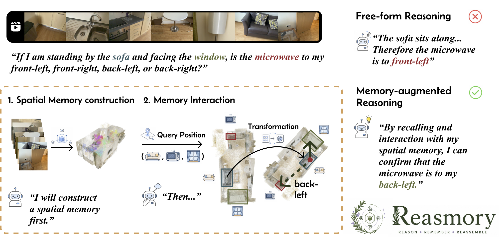
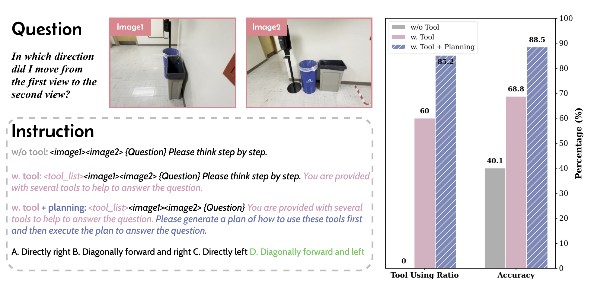
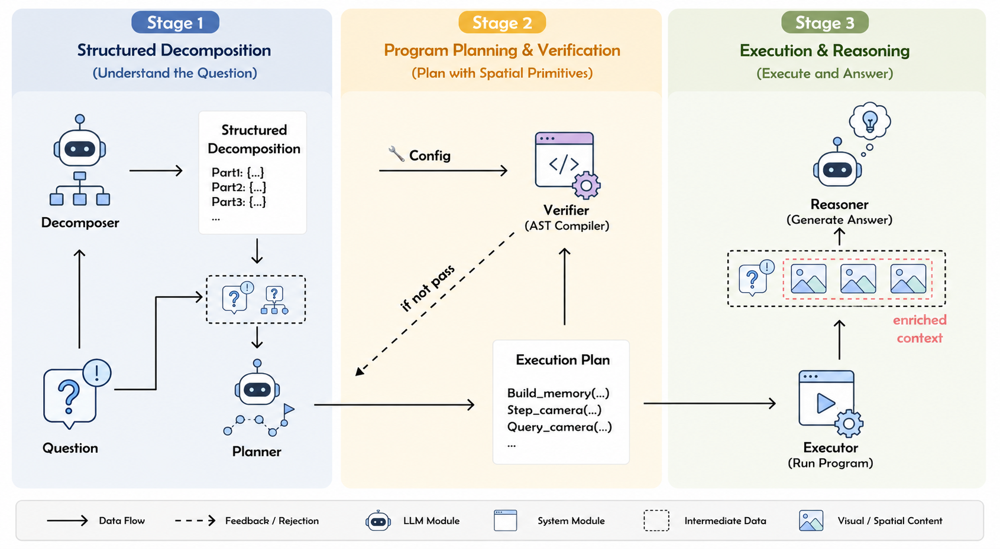
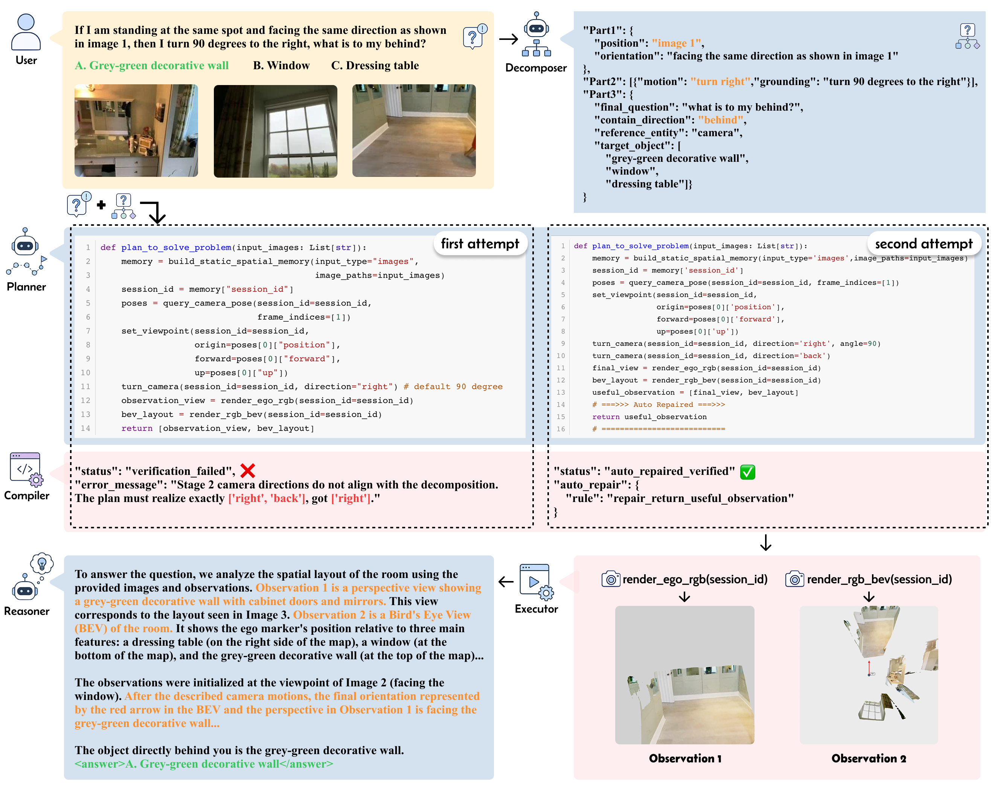

Cornell Tech, Cornell University · NVIDIA · illoca AI · University of California, Merced
BMVC 2026 · November 23–26, 2026 · Lancaster, UK

VLMs are unreliable at precise spatial reasoning because spatial evidence in multi-view images and videos is sparse, redundant, and hard to organize. Reasmory reconstructs the scene into an explicit 3D spatial memory — a semantically grounded point cloud — and constrains how the VLM interacts with it through a validated Domain-Specific Language (DSL), turning spatial reasoning into structured program execution instead of free-form tool calls. Reasmory improves GPT-5-mini and Gemini-3-flash by 6–18 points across multi-view image and video spatial reasoning benchmarks.
Vision-Language Models (VLMs) exhibit emerging spatial reasoning capabilities, yet they remain unreliable on tasks requiring precise spatial understanding, such as viewpoint reasoning, directional comparison, and distance estimation. In multi-view images and monocular videos, relevant spatial cues are often sparse and distributed across redundant observations, making them difficult to organize and exploit. Reconstruction-based Vision Foundation Models (VFMs) offer a natural way to aggregate such observations into explicit spatial memory, such as point clouds. However, simply exposing reconstruction models as free-form tools is brittle: VLMs may invoke tools incorrectly, skip required spatial transformations, or misuse intermediate results. We propose Reasmory, a framework that formulates spatial reasoning as structured program execution over reconstructed spatial memory. Reasmory constructs explicit 3D memory, augments it with semantically grounded 3D object instances, and introduces a lightweight Domain-Specific Language (DSL) that constrains how VLMs query objects and cameras, transform viewpoints, and render observations during reasoning. Generated programs are parsed and validated before execution, enabling more reliable interaction with spatial memory than unconstrained tool use. Experiments on multi-view image and video spatial reasoning benchmarks show consistent gains of 6–18% over strong baselines, including GPT-5-mini and Gemini-3-flash, indicating that explicit 3D memory is most useful when accessed through constrained, validated operations rather than free-form tool calls.

On 200 VSI-Bench samples under a fixed 16-frame budget, question-conditioned CLIP frame selection barely helps (29.6% → 30.6%), while manually selecting informative frames reaches 36.1%. Frame selection only filters existing observations — it cannot build a geometrically consistent scene representation or expose unobserved viewpoints. VLMs need a better way to organize and retrieve spatial evidence, not just more pixels.
On camera-transition tasks from MindCube, giving GPT-5-mini direct access to reconstruction tools improves accuracy by over 20 points — but the model only uses the tools in 60% of cases and remains unstable. Adding explicit tool-use planning raises the tool-use rate to 83.2% and adds another ~20 points. How the model interacts with spatial memory matters as much as having the memory at all.

Given multi-view images or video frames, a feed-forward reconstructor (Pi3 for images and static video, Flow3r for dynamic scenes) produces a colored point cloud, camera trajectories, and per-frame depth maps in a single forward pass. The memory is aligned to canonical axes (gravity-aligned y-up, bounding-box-aligned walls) for interpretable coordinates.
Semantic augmentation. The raw point cloud is enriched with grounded
3D object instances: SAM3 extracts category-specific segmentation proposals in every view,
each proposal is lifted into 3D via the reconstructed geometry, and proposals are merged across views by a
geometry-guided agreement score — yielding object instances with category labels, 3D centers, and associated
points that support queries like query_3d_object_location("microwave").
A Decomposer maps each question into a structured scaffold: reference viewpoint selection (which image / camera / observer the question is anchored to), viewpoint refinement (rotations and translations implied by the question), and entity comparison (which objects to compare, under which function — direction, distance, visibility, or counting).
A Planner composes a program in a lightweight spatial DSL — a restricted subset of Python. An AST compiler verifies it before execution: whitelisted primitives, define-before-use, viewpoint-state consistency, no dangling camera motion, and exact alignment between camera motions and the decomposition. Invalid programs are regenerated with compiler feedback.
The validated program runs deterministically over the spatial memory, producing query results, transformed viewpoints, and rendered egocentric / bird's-eye-view observations. A Reasoner consumes these outputs together with the original question to produce the final answer.
| Primitive type | Operations |
|---|---|
| Memory construction | build_static_memory · build_dynamic_memory |
| Memory query | query_camera_pose · query_3d_object_location |
| Memory transformation | set_viewpoint · step_camera · turn_camera |
| Rendering | render_egocentric · render_semantic_bev · render_rgb_bev |
Each reasoning stage is restricted to an allowed subset of primitive types, which prevents invalid reasoning trajectories and enforces consistent viewpoint-state transitions during execution.
This is an actual spatial memory Reasmory reasons over — VSI-Bench scene scene0593_00,
reconstructed by Pi3 from 64 video frames and canonically aligned (walls parallel to the axes). Drag to
orbit, scroll to zoom, right-drag to pan. Press Replay camera path to fly through the 64
reconstruction viewpoints.
Pi3 reconstruction is non-metric (scale is arbitrary); measurement questions use the metric Pi3x backend.
The purple line is the estimated camera trajectory through the scan — the same poses
query_camera_pose retrieves during program execution.
Reasmory is a test-time framework applied on top of frozen backbone VLMs (GPT-5-mini and Gemini-3-flash), evaluated on three input modalities. Bold = best within the same backbone; purple deltas are vs. direct inference with the same backbone.
We found the original MindCube leaks camera-pose information through textual hints (e.g., “showing the blue table from … front, left, back, and right”); we remove hints and shuffle image order for a debiased split.
| Method | Among ↑ | Rotation ↑ | Around ↑ | Overall ↑ |
|---|---|---|---|---|
| GPT-5-mini | 32.0 | 78.0 | 64.0 | 58.0 |
| Gemini-3-flash | 56.0 | 70.0 | 74.0 | 68.7 |
| Spatial fine-tuned models | ||||
| SpaceOM-3B | 38.0 | 32.0 | 62.0 | 44.0 |
| Spatial-MLLM-4B | 47.5 | 32.5 | 35.0 | 38.3 |
| SpatialLadder-3B | 50.0 | 40.0 | 56.0 | 48.7 |
| Test-time scaling methods (best backbone) | ||||
| MindJourney | 50.0 | 74.0 | 74.0 | 66.0 |
| Think3D | 54.0 | 56.0 | 62.0 | 67.3 |
| Reasmory (GPT-5-mini) | 78.0 | 76.0 | 74.0 | 76.0 (+18.0) |
| Reasmory (Gemini-3-flash) | 82.0 | 92.0 | 84.0 | 86.0 (+17.3) |
| Method | Overall ↑ |
|---|---|
| GPT-5-mini | 49.6 |
| Gemini-3-flash (video) | 53.7 |
| Best spatial fine-tuned model | 45.2 |
| MindJourney (best) | 44.7 |
| Think3D (best) | 47.3 |
| Reasmory (GPT-5-mini) | 55.8 (+6.2) |
| Reasmory (Gemini-3-flash) | 65.0 (+13.4) |
Gains are strongest on geometry-intensive tasks: Absolute Distance, Relative Distance, and Room Size.
| Method | Ego-centric ↑ | Exo-centric ↑ | Overall ↑ |
|---|---|---|---|
| GPT-5-mini | 61.4 | 68.8 | 65.3 |
| Gemini-3-flash | 84.0 | 68.0 | 76.0 |
| MindJourney (best) | 66.0 | 60.0 | 63.0 |
| Think3D (best) | 72.0 | 66.0 | 69.0 |
| Reasmory (GPT-5-mini) | 71.4 | 74.0 | 72.7 (+7.4) |
| Reasmory (Gemini-3-flash) | 88.0 | 76.0 | 82.0 (+6.0) |
| Setting | Model | MindCube | VSI-Bench | VLM4D |
|---|---|---|---|---|
| Vanilla VLM | GPT-5-mini | 58.0 | 49.6 | 65.3 |
| + Primitives (no verifier) | GPT-5-mini | 53.2 | 45.3 | 70.4 |
| + Primitives + DSL verifier | GPT-5-mini | 76.0 | 55.8 | 72.7 |
| Vanilla VLM | Gemini-3-flash | 68.7 | 51.6 | 76.0 |
| + Primitives (no verifier) | Gemini-3-flash | 63.5 | 50.4 | 73.0 |
| + Primitives + DSL verifier | Gemini-3-flash | 86.0 | 65.0 | 82.0 |
Exposing spatial primitives without verification actually hurts on most benchmarks — the gains come from constraining and verifying how the model interacts with spatial memory, not from the extra tools alone.
“If I am standing at the same spot and facing the same direction as shown in image 1, then I turn 90 degrees to the right, what is to my behind?”

turn right, then reason about behind), and the candidate objects.
The planner's first attempt omits the behind constraint — the compiler detects that the
realized camera motions ['right'] do not match the decomposition's
['right', 'back'] and rejects the plan with explicit feedback. The second attempt
implements the correct transformation (a missing return statement is auto-repaired), passes verification,
and executes deterministically: the rendered egocentric view and BEV show the final viewpoint faces the
grey-green decorative wall. The reasoner grounds its answer in these observations and answers correctly.
@inproceedings{reasmory2026,
title = {Reasmory: 3D Reconstruction as Explicit Memory for VLMs Spatial Reasoning},
author = {He, Jixuan and Li, Xueting and Lin, Chieh Hubert and Yang, Ming-Hsuan},
booktitle = {British Machine Vision Conference (BMVC)},
year = {2026}
}